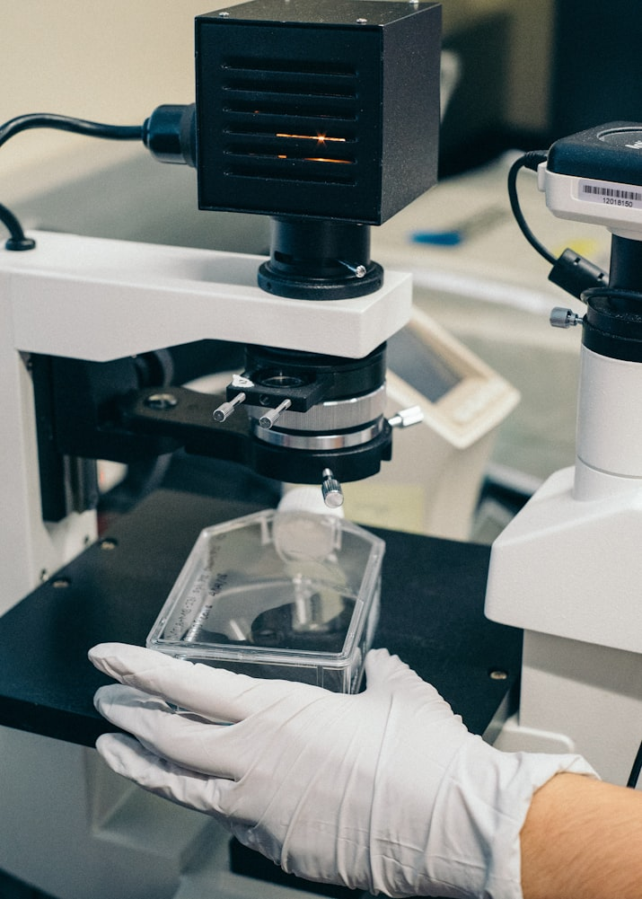

Optima Labs is a UK-based, third-party laboratory at the forefront of analytical testing for the scientific research community. Specialising in peptide analysis and Certificate of Analysis (COA) generation, we are a trusted partner for clients across the United Kingdom, Europe, and beyond.
Our facility is equipped with industry-grade High-Performance Liquid Chromatography (HPLC), mass spectrometry, and microbial testing systems, enabling us to provide accurate, verifiable results for a wide range of research materials. While peptide purity and identity testing remains our core expertise, we also conduct solvent analysis, endotoxin screening, and stability testing across various compound types used in pharmacological and biochemical research.
At Optima Labs, we are deeply committed to scientific integrity, transparency, and reproducibility. Each test we perform is backed by robust internal protocols and quality assurance systems, with traceable COAs accessible via our secure verification portal. This ensures that researchers and suppliers alike can validate the authenticity and quality of their compounds with full confidence.
Our clients include academic institutions, private research labs, pharmaceutical developers, and regulated suppliers who demand high-precision results and fast turnaround times. In a landscape increasingly affected by substandard or mislabelled materials, Optima Labs stands as a proactive force in raising testing standards, protecting research integrity, and promoting safer science across borders.